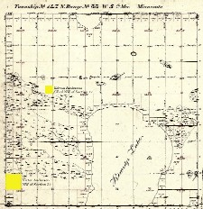
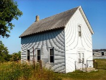
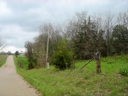
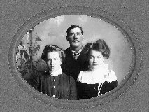
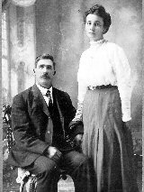
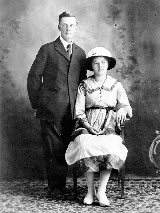

|
Missouri  Platte County, Missouri was formed in 1838. Named for the Platte River, the principal river of the county. Read more... |
|
Mills County Iowa 1875  Mills County, Iowa was formed in 1851. It was named for Major Frederick Mills of Burlington, Iowa who was killed at the Battle of Churubusco during the Mexican-American War. Read more... |
|
Fremont County Iowa Manti was formed in 1852 by Alpheus Cutler and his followers. Read more... |
|
Otter Tail County Minnesota  Clitherall was a village originally located in section 12 of Clitherall Township of Otter Tail County, which was settled in 1865 and platted in October 1881. It was named like the lake for Major George Clitherall. Read more... |
|
Otter Tail County Minnesota  The township of Girard was organized in 1881 or early in 1882. John Howard, who had arrived in Clitherall in August, 1881, circulated a petition for its organization, and the petition was granted. Various names were suggested for the new township, Harscrabble being one of them. Others suggested Andersonville, as there were seven families by the name of Anderson. But Mr. Howard liked neither of these names, so he wrote into the petition the name of "Girard," which was the name of his birthplace, Girard, Pennsylvania. Read more... |
|
Cedar County Missouri  Lebeck (formerly Clair Spring) was a trading-point 17 miles north, northwest of Stockton. It was settled in 1868 by Noah Graham. Read more... |
|
Beltrami County Minnesota  Northern Township is located directly north of the City of Bemidji in northern Minnesota. The township surrounds a large portion of beautiful Lake Bemidji. Read more... |
|
Vanscoy RM Saskatchewan  The Anderson families homesteaded in Township 34 North of Range 7 West of the Third Prime Meridian. Read more... |
This family story is to a large extent based on Emma (Whiting) Anderson's Memoirs.
Edwin Anderson c1910 |
Emma Anderson c1910 |
Edwin Buckley Anderson was born July 24, 1848, at Platte City, Platte County, Missouri. His father was Buckley Burnham Anderson, who was born in Huron County, Ohio, January 14, 1819. He died July 4, 1895, at Lebeck, Cedar County, Missouri. Buckley married to Sally Maria Cutler December 31, 1837 in Ray County, Missouri. Edwin was the sixth child of Buckley and Sally Anderson. His older siblings were Elvira born 1838 in Far West, Missouri; Amos in 1840, Zina in 1841 and Jedidiah in 1844 were born in Nauvoo, Illinois; and Adney born 1846 in Winter Quarters, Nebraska. Two of Edwin’s older siblings had died prior to 1848; Amos in 1840, and Adney in 1847. By 1850, the Anderson family had moved to Gallatin Township in Clay County, Missouri. About 1850, Edwin’s family moved to Mills County, Iowa where Edwin’s brothers Richard in 1850, William in 1852 and Freeman in 1855 were born. In 1855, they moved to Manti in Fisher Township, Fremont County in Iowa where Edwin’s siblings Elva in 1857, Clarissa in 1859, Myron in 1861 and Adney in 1864 were born.
Emma's Birthplace View towards Silver Creek Silver Creek Township Mills County, Iowa |
Silver Creek View Silver Creek Township Mills County, Iowa |
Emma Lucine Whiting was born March 8, 1853 at Silver Creek, Mills County, Iowa. Her father, Francis Lewis Whiting, was born September 22, 1830 in Nelson, Portage County, Ohio. He died September 11, 1909 at Clitherall, Minnesota. Emma’s father married Ann Janette Burdick on February 12, 1852 at Silver Creek, Mills County, Iowa. Ann was born February 19, 1831 in Oswego County, New York. While still living in Silver Creek Township, Emma’s sister Lucia Louisa was born early in 1855. Later in 1855, Emma’s family moved to Manti in Fisher Township, Fremont County, Iowa where three of Emma’s siblings were born; Ella Janette in 1857, Arthur Wellington in 1860, and Mary Belle in 1864.
 Plaque Manti, Iowa |
In the fall of 1864, Emma’s parents, and several other families rigged up their covered wagons and started out for their new home in Minnesota, camping by the way. In November, they reached Redwing, Minnesota and were greeted with a snow storm, that night. They decided that they had gone far enough until spring. On April 6, 1865, they again took up their pilgrimage toward the north. After a long trip, they came to Otter Tail Lake. They camped there a day or two, then on to West Battle Lake, where they camped near the north shore, perhaps 3 or 4 days. Then at last on May 6, 1865 they reached Clitherall Lake, and there they made their homes. They were favoured with very good crops that first summer, considering the small fields and cold backward spring. The men were able to break up, and get under cultivation, and the limited supply of garden seeds we had brought with them or been able to buy.
In 1865, Emma’s parents had an addition to their family when Louisa Whiting was born. She was their first child born in their new home in Clitherall, Minnesota.
 Plaque Old Clitherall, Minnesota |
In the fall of 1866, Emma’s father and family returned to Iowa, to get her Grandmother Burdick, so again a long trip was taken in a covered wagon. When they reached Sidney, Iowa, Emma’s father rented rooms for the winter. The next July, they were again on the road, in a covered wagon, on their way back to Minnesota, but they were not alone. There were four covered wagons jogging along the trail, with uncles and cousins, but also two young gentlemen, one of them Edwin Buckley Anderson. When at last they could see Clitherall Lake, they had been on the road five weeks camping by the way and sleeping in the wagons.
In 1869, Emma’s parents had their second child in Clitherall. She was named Sylvia Cordelia Whiting.
|  Old Clitherall Church Clitherall, Minnesota |
On the evening of the April 5, 1870, a company of about 45 relatives and friends, gathered at the home of Emma’s parents, to attend the wedding of their daughter Emma to Edwin Buckley Anderson. Emma taught school the summer of 1870, while Edwin busied himself with farming, and building their new home. It was not what would be called a first class house with all modern conveniences, but a log house of one room. Their first furniture was all home made. Emma’s father made the chairs, and they bought a new cook stove, and a plain set of white dishes. Their first table cloths were made of unbleached muslin, and bleached by continued washing. Edwin owned a yoke of oxen and a cow. The farming furnished their bread stuff and vegetables, and Emma’s school wages were carefully expended for necessities, for the coming winter. Their two pigs, that they were feeding to supply our winter’s meat, came up missing that fall. They imagined they furnished meat for a camp of Indians, who camped for a week or two a half mile from them, as pig bones about their size were found near the camp after the Indians were gone.
 Old Clitherall Store Clitherall, Minnesota |
On May 29, 1871, their first child came and he was named Ernest Morell Anderson, and Emma thought it quite an item to learn how to keep all her work done and care for a crying baby.
On November 15, 1872, their 2nd son Lewis Ethan Anderson was born. Then, Emma had to learn how to care for two babies and do the other necessary work.
In early January 1873, Edwin and Emma experienced a massive snow storm that reached throughout all of Minnesota, North Dakota and Iowa. Edwin was in the field finishing the threshing, when all of a sudden he knew a storm was coming. Edwin decided to go to the village only one and a half miles from their home with a load of wheat. It was only a few minutes until the snow was so thick in the air. Emma could see only a few feet from the house. It was a terrible blizzard and turned cold so fast and dark so soon. Emma felt terribly anxious for how could Edwin see his way home when she could only see a few feet from the window. At last, Edwin entered the kitchen. What a weight rolled off Emma’s mind, as her husband was at home. Edwin told her that he had let the horses guide themselves while on the lake, but they were a little off the track when they neared the shore, but Edwin could see a lantern, so he knew they were off the track and swung them into it in the right place to come up the bank. It was a fierce storm that lasted 3 days and nights.
On September 29, 1874 Emma’s parents received the last addition to their family when Francis Lester Whiting was born.
On January 19, 1875, Edwin and Emma’s first little daughter was born. They named her Celia Annette Anderson. She was destined to remain with them but a short time. They had measles in the family and Emma had them and the babe took the disease from Emma. Emma did not know that her baby was dangerously ill, but thought when she broke out she would be all right. She gave her some sage tea to try to drive the disease out, but she would throw it up. She seemed quieter one day, slept most of the time, but did not pay much attention to anything. Next morning they found her dead in their bed when they awoke. She was not quite nine months old when she died September 12, 1875.
July 1876, came, and the grasshoppers came to their region of country, and nearly all vegetables were destroyed. They saw hard times the next two years. On July 16, 1876 their son Victor Rozelle Anderson was born. They shortly moved into old town, as it was called, to be near Emma’s mothers, while Edwin went away to work. Becker County, had not suffered from the grasshopper raid, as Otter Tail County had. So Edwin went to his father’s region of the country to help thresh, thus earning enough to tide them over that winter. Edwin’s father also sent them several sacks of potatoes.
In the summer of 1877, the grasshoppers’ eggs began to hatch out and again the hoppers took their crops. Edwin and Emma rigged up their covered wagon and moved up to Edwin’s father’s place for the summer and fall. Emma’s sister Luci and her husband, Alva Murdock, and their sweet little Bessie, soon followed them. They moved Edwin’s father’s shop, and Emma and her sister lived together while Edwin and Alva worked for the farmers and threshers at what ever they could find to do, and thus they were provided for.
In the fall Emma’s sister and husband moved back to Clitherall. The ensuing winter, Edwin and his brother Richard took a job, of tie making and wood chopping in the timber near Detroit, Minnesota. They moved to the shanty in the woods the day before Christmas, and as Edwin had told his three little boys that they could have a Christmas tree, if they got to their woods camp in time, they were planning on it. Emma insisted on Edwin cutting an evergreen bush, which he nailed up on the wall. Emma fixed twine around the red apples and hung them on the tree, also the striped sticks of candy, the red mittens, and some small cakes with raisins. In the morning their three children were as pleased over their Christmas tree and never found the least fault with it.
The snow went off early the spring of 1878. So they moved back to Clitherall. Edwin then concluded to take a homestead near East Battle Lake, on the north side and go in for himself. Edwin’s homestead consisted of 157.85 acres located in Section 24 of Girard Township (Township 133 North, Range 39 West of 5th Prime Meridian). They built a home on their homestead, and managed to raise a very good garden the first year, built a pasture fence and a good sized log house. Most all of the houses in the country were of logs at this time. Edwin was away most of the time that winter, at work in the woods. Early in the spring he was home working to open up a farm on their brush land.
On August 6, 1879, their daughter Alice Eugenia Anderson was born.
A school district was soon organized so their three boys could attend school. After this a railroad was built through their region of the country. This made work and wages more plentiful for all the settlers. On October 30, 1881, their son Edwin Byron Anderson was born.
Thus the years went by. The little church we were members of had gone down spiritually until they ceased to hold meetings entirely for sometime. The grasshoppers had come in a year from then, and now in a few short years, they had given up holding services.
On July 20, 1885, their daughter Bertha Francis Anderson was born, and they all loved their lively little girl who could jump so spritely when a year old, in her jumper.
Edwin received his Patent for his homestead from the United States Government on May 4, 1885. After it was registered on July 22, 1886, Edwin and Emma sold their homestead for $1150. Edwin bought a fine new home, which was a blessing to Emma for 28 years or more. In the fall of 1887, they moved to Missouri and located at Independence and remained there one year and a half.
|  Edwin's Farm Lebeck, Missouri |
On March 10, 1888, a dear little babe was born who they named Raymond Arthur Anderson. He was not very well and for several months before his death, was a great sufferer. He died October 18, 1888, and was laid to rest in the Independence Cemetery.
In the spring of 1889, Edwin and Emma moved to the Lebeck area of Cedar County, Missouri. Edwin’s parents and his brothers Jedidiah and Myron had recently moved from Minnesota to Cedar County, Missouri.
They rented a farm the first year and then moved onto a piece of land which Edwin had purchased March 19, 1889. This land consisted of 40 acres located about a mile south-west of Lebeck in Section 16 of Township 36 North, Range 27 West of the 5th Prime Meridian. They were not very prosperous and though they worked hard and lived economically, they kept getting poorer. The boys grew up, and had to go away to find work and their stock died for no apparent reason.
On December 23, 1889, their daughter Emma Grace Anderson was born.
 Lebeck Cemetery Edwin's Parent's Burial Location |
On November 27, 1890, Edwin’s mother Sally Maria Anderson died and was buried in the Lebeck Cemetery, Missouri.
On July 13, 1892 their twins were born. They named them Robert Earl Anderson and Ruby Pearl Anderson. When they were three months old, the family’s last cow died, so they had to buy milk for the twins to have enough to eat.
On March 19, 1893, their house caught fire and burned to the ground. Most of their clothing and bedding and other things were burned. They moved next day into a little house a mile away. A week later, Victor took very sick with sort of pneumonia and pleurisy combined. After being sick about a week and growing worse all the time, Victor was healed instantly through the administration of Elders G. Beebe and Jedd Anderson.
After that they had much sickness in the family, and though they received blessings often in answer to prayer yet sickness would come again. They almost despaired of ever raising Ruby, as she had so much sickness. A short time before the twins were a year old, they were thrown out of a rig, when riding, and into a rickety ditch, or gully and Emma suffered a compound dislocation of her right elbow. Doctor Marquis of Cedar Springs was summoned and he and Edwin’s brother Jedd, managed after the 5th trial, which caused her great pain, to set the elbow back into the proper place. It was a week before Emma could move a finger of her hand, three weeks before she could commence to squeeze a dishcloth in her hand so as to help wash dishes, six weeks before she could help wash. For all these six weeks Victor, who was about 17 and Alice, who was 14, would each take a tub and board and work hard all one day in every week to get the week’s washing done.
Lewis was in Minnesota to find work at that time. Ernest went into Indian Territory, or Oklahoma to work. That fall of 1893, Edwin was sick for a while; both twins were sick, Victor was sick again and again and was healed through the administration of the Elders. That fall or early part of winter, Lewis, came home on a visit and he took a sick spell, when he got better he advised them to go back to Minnesota. Edwin found a chance to sell his 40 acres for $250 on February 21, 1894. He took the most of it in horses and colts, so he rigged up two covered wagons, and on May 17, 1894, and they started on a pilgrimage again to Minnesota. Edwin’s father Buckley and his brothers Jedidiah and Myron remained in Cedar County.
Ernest was still in Oklahoma, and Lewis had returned to Minnesota, so there were nine members in the family. When they were two weeks on the road, they found that their five youngest children had been exposed to whooping cough, as they had begun to whoop, and they had whooping times from then on. They were about six weeks on the road. Emma was very glad to meet her parents, brothers and sisters, and other relatives again when they arrived in Clitherall.
They moved into a house which was vacant, and stayed that summer and winter. Edwin and sons worked at whatever their hands found to do. On February 22, 1895, they celebrated Washington’s Birthday by another burnout. They lost lots of bedding and clothing in this fire. After these fires, their kind friends and neighbours came to their relief with many needful things, which they greatly appreciated.
On July 4, 1895, Edwin’s father Buckley Burnham Anderson died and was buried in Lebeck Cemetery, Missouri.
The summer of 1895, they rented a farm of Orris Albertson and raised a fine crop. The children and Emma tried to help all they could. They crawled over the onion field time after time with the children's helping to pull weeds. In the fall they had to put 40 bushel of onions in an out door cellar because there was no sale for them. The next spring Edwin had to take them all out and dump them on the ground, because there was no sale.
Their potatoes, which the children and Emma worked so faithfully to help dig and cellar, were partly fed to the cows and a few sold for 10¢ a bushel. In the spring their wheat brought about 40¢ a bushel, still they had plenty to eat and lived some way. The next year they rented the St. Pierre farm north of Battle Lake. Crops were poor this year too. The next year they rented a small farm of Alva Murdock. In 1898 and 1899 they rented the Ricker farm in Girard. While there, Lewis enlisted in the Cuban Spanish War, with the United States.
Ernest Morell Anderson Lily Luene Hand Wedding Day 1900 |
In the fall of 1899, they moved to Bemidji, Minnesota over 100 miles north. Their daughter had taught a term of school near Deer Creek, and this summer had taught near Buena Vista in Beltrami County. Their sons Ernest and Victor and Edwin’s brothers Freeman and Myron had taken homesteads near Bemidji, so they moved up there and lived on Victor's homestead.
In May 1900, they were pleased to have Emma’s parents, her sister Lucia who was now a widow, and her youngest sister Corda, and her husband and family visit them.
They worked hard at Bemidji, but began to have more for their comfort. Lewis came from the Philippines, for which they were glad. The men worked at wood hauling and chopping in the winter and trying to get farms open in the Jack pine regions in the summer. Their home was always open to the missionaries, and they were pleased to have them. Here Edwin, was ordained a Priest.
On June 10, 1900, their oldest son Ernest, was married to Miss Lilly Hand, and their oldest daughter Alice was united in marriage with Leon Gould at their home. Leon and Alice soon left for Lamoni, Iowa where Leon took up the work of stenography for the Patriarch. Alice wrote faithfully of how kind Aunt Lizzie Smith was to her when she went as a bride and stranger to a strange land. Ernest and his bride soon went to housekeeping on his homestead, as Edwin and Emma’s family began to dwindle.
In 1901, Freeman Anderson and family and Edwin and Emma, and their daughters Bertha, Grace, and Ruby and their son Robert, went with teams and covered wagons to Clitherall, to the reunion. When they returned home from the reunion they found Alice and Leon there. Leon left in a few days to start on a long mission to Australia, leaving his wife with them. That fall Leon’s only brother Winfield (always called Winnie) died with typhoid fever, at his parent’s home in Otter Tail County.
Lewis Ethan Anderson |
|  Emma Grace Anderson Victor Rozelle Anderson Cousin Jennie Anderson |
Alice wrote to Leon every week and received letters from him often, but he could not get her letters as he was going from one island to another. His mail could never catch up with him, until he reached Australia. While on one of the Islands, the missionaries were warned through the gifts of the Holy Spirit, of sorrow awaiting some of their number. Leon of course would wonder if it could be Alice. Their little daughter Alice Leona was born November 28, 1901, at their home. It was way into January 1902, before Leon got the letters, telling him about his new little daughter. He heard of his brother’s death while reading the Ensign. In March, Alice and baby left them to visit their relations in Clitherall. While there the baby was healed of a terrible affliction of eczema, or something like it, through administration of the Elders. When Leon came home they went to Lamoni to live. Bertha and Lewis went there soon to work, for Alice, at the Saints home for the aged.
Time passed on, their son Victor, their nephew Ross Anderson, and John Hedeen, a neighbour, went to Canada, and took homesteads, about 20 miles south and west of Saskatoon, North-West Territories. In the winter of 1904, Victor, returned on a visit, and married Miss Anna Hedeen. They went immediately to their Canadian home, but she only lived a few months. She died of a blind tumour, or the effects of the operation, by doctors to remove it. Thus trouble comes so unexpected. In the early winter of 1905, Victor returned to Minnesota and worked near home all winter.
Emma was shown in a dream that they would go to Canada soon. A new railroad was built near their house. They boarded a dozen or more hands for nearly three months. Then Victor chartered a car to take their stock and household effects to Canada. Ernest and wife and little Thelma, (they had lost their first baby boy named Lester Lawrence) started for Portland, Oregon where Lilly's mother lived the same day they started for Canada. On April 12, 1905, they boarded the train about 3:00 AM on Wednesday morning. By 11:00 PM Thursday evening they were at brother Richard Anderson's home. They got to Saskatoon about 6:00 PM and hired a rig to take them out 20 miles, so they were good and tired when they got there at 11:00 PM that night. Next day they drove over to Victor's home and so were at home in a strange land.
Edwin's Shed Minnesota District Vanscoy RM, Saskatchewan |
 Minnesota School Minnesota District Vanscoy RM, Saskatchewan |
The next Monday, Victor reached Saskatoon, with the car. Their boys Byron and Victor, Uncle Rich and John Hedeen, all went with teams to help haul the effects, and drive the cows to their place. Edwin filed on a homestead, joining Victors. From the first, Emma loved their Canadian home. About the third Sunday after reaching there, they started a Sunday school. The next winter a Branch was organized. Edwin was elected president, he had been ordained a priest while at Bemidji, and later and Elder at a Clitherall reunion.
Edwin and Emma’s homestead, which was identified as SE ¼ of Section 22 in Township 34 North and Range 7 West of the 3rd Prime Meridian, was first entered May 31, 1905. They were finally able to move into their new 24’ by 30’ frame and log house, which was started in June 1905, worth $600 after it was completed in October 1905. They broke 20 acres and cropped 5 acres of their homestead that first summer. Over the next three years, they broke an additional 63 acres, and by 1908 they cropped 67 acres. They also built a 25’ by 28’ barn worth $100 to house their livestock. They also fenced 30 acres and built a granary. Having met all requirements, their homestead was finally officially turned over to them by the Department of the Interior on December 4, 1908.
They did the best they could, with their limited means, they worked and prayed and trusted. Their children left home for homes of their own. Ernest's dear wife died at Dayton, Washington on December 13, 1906. The next March, Ernest and little three and a half year old Thelma, came to live with them in Canada. Their daughter Grace married Omar Nunn on September 4, 1907. Ross Anderson married their daughter Bertha on April 12, 1909. Victor married Miss Jennie Leach on May 30, 1909 at Edwin and Emma’s house. Their son Byron married Miss Nora Hourie on May 8, 1911. Lewis married Miss Addie Caress on November 29, 1911. The number was decreasing in their home, but increasing in their children's homes.
In the spring of 1909, Leon and Alice and their four children, and Lewis had left Lamoni, Iowa and went to or near Bemidji, Minnesota to live. Emma had relatives near there and also at Clitherall. It had been nearly five years since Emma had seen any of them. Emma had wished to make a visit to Minnesota in the early winter or late fall of 1909. About the same time a young man whose homestead joined theirs, and who had stayed with them a good deal, until he seemed one of the family, heard that his mother was sick, who lived near Bemidji, too. He was to start for Minnesota the last of the week. Edwin bought a return ticket for Emma for about $31.00. He thought Emma could stay about three months and Lewis would be ready to come home with her, as he intended to go to Canada in the spring.
|  Victor Anderson Jennie Leach Wedding Day 1909 |
About 1:00 PM, they entered the train. Emma thought to herself, I don't know when I have felt so well as this whole afternoon. As soon as the train had left Saskatoon, she was hungry, and enjoyed her meal. They reached Bemidji, Monday forenoon, took dinner at a restaurant. John Hedeen hired a rig, to take them and their trunks out into the country. They reached his mothers first, and found her better, then on to Leon's and Alice's. They did not know Emma was coming, so she took them by surprise. When Emma told Lewis her plans, he said he could not get ready to go to Canada, by the first of March. Emma wrote home and asked her husband to try and make it possible for him to come down and make a visit that winter. She thought it would be terrible to have to go so far alone. When Edwin wrote to Emma, he said he would think of it but feared he could not make it.
Edwin Byron Anderson Nora Hourie Elsie May Anderson Edwin Eugene Anderson Lillian Zella Anderson c1915 |
Emma stayed at Alice's all through December, except nearly every Sunday Lewis and Emma would go over to Freeman Anderson home and visit her sister May, and go to church, which was held at the school house or in private dwellings. New Years Day passed, and 1910, was ushered in, how she looked all day for her husband. She thought, if he does come at all, he will come before the New Year. How disappointed she did feel to think Edwin wasn't here to go with her down to Clitherall, and to visit all round and go home with her. When they reached the school house May made Emma go in first, and when she got into the inner door, she stopped speechless for there sat a man who’s back looked just like Edwin. She couldn't believe her eyes, until he turned his head and she knew it was him. Then she rushed over to him and shook his hand, and said right out loud in Sunday school, "Oh, they didn't let me know you had come." How everyone laughed at her then, all knowing how surprised and pleased she was. That was one of her happiest days. It seemed that the children, back at home had all combined to encourage him to come. He wanted to come, but feared it would not be wise.
|  Robert Earl Anderson Martha Hovey Wedding Day 1917 |
Well Leon and Alice, were as surprised to see Edwin that night, as they had been to see Emma. They visited around Bemidji, awhile. They went to Clitherall and visited there, but not long enough for Edwin. They hurried back to Bemidji, to go home with the young folks. So there were six young folks going with them, when she had feared she would have to be going alone.
Francis Lewis Whiting Gravestone Mount Pleasant Cemetery Clitherall, Minnesota |
Edwin looked solemn when they were leaving old Clitherall, and kept looking out the car window, at Orsoss field, as long as they could see any of it. Until Emma said, "Edwin, I am going to try to feel as sister Lu told us to, as if I am not leaving for good, but am coming back." "Well", Edwin said, "that's a good way to feel if you can think so." She thought to herself, Edwin doesn't feel as if he is ever coming back in this life. Then when they bid their daughter, Alice, goodby, oh what a look of sadness came over Edwin’s face, and Emma noted it, and thought, Edwin doesn't think he will ever see her again. She could have cried with fear of it, then, but needed to control herself.
Emma was glad that they had made that short visit then. They had a fine trip home. They went through part of the great Eaton Store, at Winnipeg, but Emma thought she wished to see more of it and Edwin cared nothing for any of it. He sat and waited until Emma was ready to go.
Edwin Anderson Gravestone Wild Rose Cemetery Vanscoy RM Saskatchewan |
Emma’s father Francis Lewis Whiting died April 10, 1911 and was buried at the Mount Pleasant Cemetery near Clitherall, Otter Tail, Minnesota.
They reached home safely. In the summer of 1911, Emma went down to Bemidji, again with their sister-in-law Eliza Anderson, to see her sister May, Freeman’s wife, who was very sick. They stayed about a month. May died a couple of weeks after they left her. She was the first one of Emma’s mother’s children to end her life's work. Their dear old father had passed over the river in the fall of 1911.
On September 9, 1908, Edwin applied for entry for a Pre-emption for the NE ¼ of Section 15 in Township 34 North, Range 7 west of the 3rd Prime Meridian. Edwin gained entry September 12, 1908 to his new acreage, which was south of and adjacent to his homestead. They broke 40 acres during 1909 and an additional 40 acres in 1910. By 1911, Edwin cropped 80 acres.
Robert Earl Anderson Martha Anderson Robert Alton Anderson Veryl Ione Anderson Laurence Edwin Anderson Family 1930 |
All this year, Emma had known that her husband’s health was not so good. In the winter of 1911, he had been sick a few weeks, with what he called rheumatism, as his feet and limbs would swell. He never seemed to recover from this so as to feel as well. After Emma had returned from Bemidji, he took a short vacation and went with Lewis to Sedly, to a Conference, and was gone nearly a week. After this he seemed anxious to get all his business affairs settled up. As far as possible, made final proof on his Pre-emption etc. so that when all the payments were made there would be no trouble about the proofs.
Ann Janette Whiting Gravestone Mount Pleasant Cemetery Clitherall, Minnesota |
About New Years time 1912, he was again taken sick, the same as the year before. He got a little better, so he could chore around a little, but was very weak. He still thought it rheumatism. At last Emma prevailed on him to see a doctor, who pronounced it leakage of the heart.
One Sunday, when they were alone, Edwin told Emma, he did not know as he was ever to get well. Emma said "if you think so Ed, don't go until you bless me, for I do not feel as if I could bare it." (Emma had received evidence before this that he would die). So they knelt in prayer and Edwin then anointed Emma’s head with oil, and prayed God to bless her. She received a spirit of peace and reconciliation to Gods will. Edwin died on May 23, 1912 at his home. Edwin Buckley Anderson was buried at the Wild Rose Cemetery just north-west of Vanscoy.
Emma’s mother Ann Janette Whiting (nee Burdick) died January 21, 1917 and was buried at the Mount Pleasant Cemetery near Clitherall, Otter Tail, Minnesota.
Emma (Whiting) Anderson Gravestone Mount Grove Cemetery Independence, Missouri |
Edwin’s Last Will and Testament had designated Lewis Ethan Anderson and Victor Rozelle Anderson as executers of his estate. Edwin had bequeathed $200 to each of his nine children, $200 to the Reorganized Church of Jesus Christ of Latter Day Saints, and to his wife Emma L Anderson all the remainder of his property, real estate and effects. On November 27, 1911, Edwin had applied for his Patent, but it wasn’t approved until January 16, 1916, well after Edwin’s death.
By October 10, 1920, the hand of affliction was upon Emma and she was so lame that she was now going on crutches. She had lived for a time in Canada, Montana, Minnesota and Missouri. At that time, she was in Missouri, at the home of her sister Cordelia Perry.
Emma L Anderson died June 10, 1922 in Independence, Missouri. The cause of death was acute enteritis. She was buried at the Mound Grove Cemetery in Independence on June 11, 1922. Her death was registered June 13, 1922 by her son Lewis E Anderson.